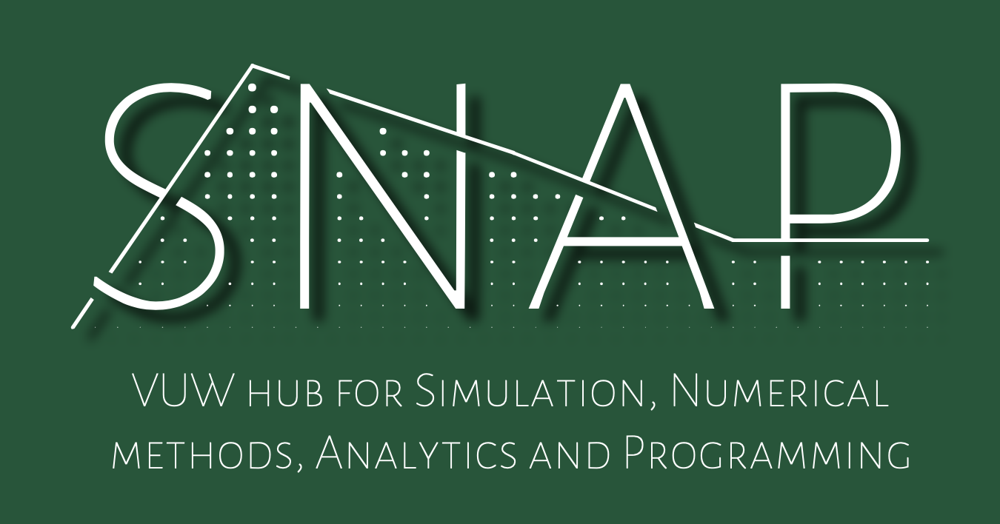

Prior to our inaugural workshop, we asked the university community to let us know what type of software and modelling tools they use for research. We received 22 complete surveys and, while this is not a particularly large sample, the range of responses still gives key insights into the tools and software used by our community.
The first survey question asked which programming languages respondents regularly use for research. Each of our participants identified 2.5 languages on average. R was the most popular (≈55%) and was closely followed by Python (50%) and C/C++ (≈45%). There was then a gap to the next few languages with Matlab and Fortran coming in as a tie (≈23% each) and then Julia (≈18%) and Mathematica (≈14%). This was followed by a variety of languages which each received one or two votes.
It is not surprising that the high level and incredibly versatile languages R and Python topped the list, but it was interesting to note that lower-level languages such as C/C++ and Fortran are also widely used. Another interesting observation is that of those that identified only a single language (≈32%) the overwhelming majority of those were R users. This suggests to me that the R environment is so versatile that many of its users have little need for additional tools. On the other hand, all our Python users identified additional languages that they use, among which C/C++ was most common. This accords with my own experiences, and supports the view that Python is an excellent gateway to learning other languages.
Our second survey question asked about specific uses of different programming languages and tools. To avoid the risk of identifying any individuals it suffices to say there was a diverse range of uses that our survey participants identified. Common themes were, unsurprisingly, numerical simulation, data analysis and visualisation.
The next question assessed the willingness to learn about new languages and/or tools for simulation, modelling and analytics. The majority of responses were yes (≈55%) and the remainder were maybe. Most significantly, no participants responded with no. We then asked our survey participants if they would be able and interested in contributing their own knowledge towards helping other researchers. Again, the overwhelming response was yes (≈59%) followed by maybe (≈27%) followed by just a few no’s. Combined, I think this shows a great enthusiasm for sharing knowledge and learning about new computational tools across our community. These sentiments were echoed in the success of our inaugural workshop and demonstrates that SNAP can play an important role in facilitating/organising such activities.
Our last question asked about what the most important resource that needs to be more effective/efficient for the purpose of conducting research. Once more there was a diverse range of responses. I’ll briefly summarise a few of the most common themes:
- Access to high performance computers, cloud computing and storage resources.
- Making more university computers available with capabilities to use/compile a range of programming languages (including more Fortran compilers), particularly for teaching purposes.
- Better communication of what software and data sets are available within VUW.
- Access to other people, particularly those experienced in working with data and statistical models/methods.
Yet again I think these present areas where SNAP can play an important role, particularly with respect to communicating the expertise that people have in specific software/tools and helping to connect those that may be able to help each other.
Going forwards we intend to periodically poll the university community on this topic. This will be useful in monitoring the evolving needs of our researchers and students and will guide the development of SNAP activities which will be of most benefit.
Cheers,
Brendan